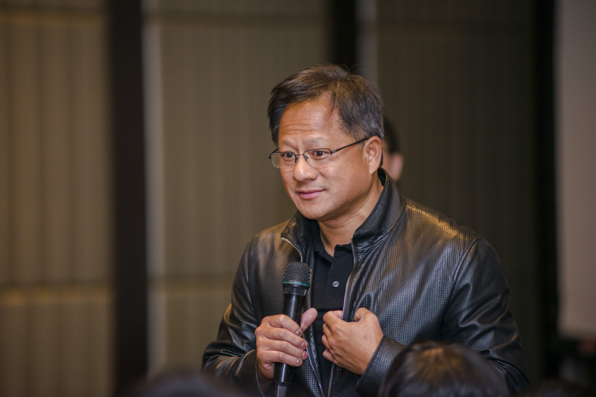
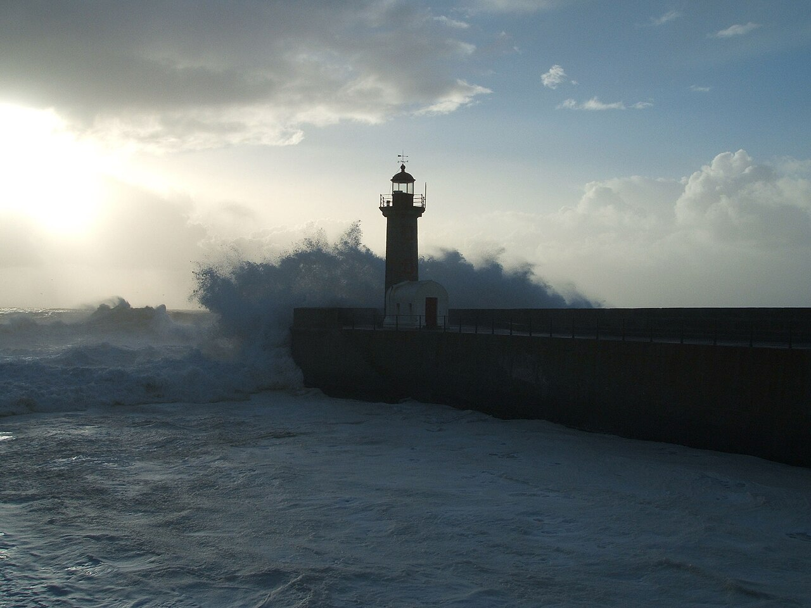

After Abu Dhabi, Moscow and Dublin, Europe will have a five-country team at the next round of Ukraine talks; the Kremlin has yet to confirm this and no date has been announced. Read →
Jensen Huang stepped down as head of Nvidia after a week of scandal; chief financial officer Colette Kress is interim leader and a successor has yet to be chosen. Read →
Storm Charles put mainland Portugal on alert and closed schools; it left 1,630 incidents, no deaths and a national one-day rainfall record in Madeira. Read →
SpaceX caught the Starship spacecraft with the tower on its return from orbit for the first time, on Saturday, although the booster failed to return and fell into the Gulf of Mexico. Read →
Thousands of people marched for housing in 32 cities on Saturday, a day after the President heard the protest camps without promising to veto the rent law. Read →
Deaths in the Portimão emergency department and an arrest in Aveiro led to the removal of two local health unit heads within 24 hours and put the health minister under pressure. Read →
The week ahead
Mon–Fri, 16 to 20 NovSecond week of COP31 in Antalya: the draft political deal is expected early in the week and the summit is due to end on 20 November.
Tuesday 17 NovNvidia reports quarterly results, its first since Jensen Huang's departure, with Colette Kress as interim leader.
Wednesday and Thursday, 18–19 NovAPEC leaders' meeting in Shenzhen, China; the Kremlin says a meeting between Putin, Xi Jinping and Trump may take place, but it is not confirmed.
Thursday 19 NovAnthropic's expected Nasdaq debut, after the final price is set on 18 November, barring postponement.
Story of the week · 01 / World · Fri 13 Nov
Ukraine: prisoner swap agreed in principle and Europe at the table in the next round, but no date and no guarantees from the Kremlin
Facts (agreement in principle, European team) · Kremlin has not confirmed European presence; round has no date ·
Archive image
Zelensky with European Commission President Ursula von der Leyen in Brussels (archive image, 2025; does not show this week's talks). Author: Dati Bendo / European Union, 2025 / EC - Audiovisual Service · Licence: CC BY 4.0 · source
This was the week the talks to end the war in Ukraine changed shape. Ukraine, Russia and the US sat face to face again in Abu Dhabi on 10 and 11 November, for the first time in nine months, and came away with no decisive progress but with an agreement in principle for a large prisoner exchange. On the 12th, US envoys Jared Kushner and Steve Witkoff met Vladimir Putin in Moscow and, at the end of the day, Volodymyr Zelensky in Dublin, and announced that Europe will take part in the next round. On the 13th, EU leaders decided that Europe will be represented by a team of five countries — the United Kingdom, France, Germany, Italy and Poland — together with the European institutions, without a single envoy.
Almost everything else remained unresolved. Zelensky reiterated that Kyiv will not give up the occupied territories; Moscow maintains its territorial demands and rejects foreign peacekeeping troops in Ukraine. Kremlin spokesman Dmitry Peskov said Europe must first show it wants to contribute to peace, and Russia has not confirmed the European participation announced by the US envoys. The war went on during the talks: Russian strikes left about 850,000 people without power on the eve of Abu Dhabi and, on the 13th, drones hit a hospital in central Kyiv.
The prisoner exchange could be the largest since the 2022 invasion. Russian officials spoke of more than a thousand prisoners on each side and a timeframe of two to three weeks, but neither government has published the final number or the date.
What has changed since: On 13 November, Zelensky said US negotiators had asked for the first time, in Abu Dhabi, whether Ukraine would leave the Donbas in exchange for NATO membership; he described it as a question rather than a proposal and said a referendum would only be possible with firm security guarantees. As this issue went to press, neither the date nor the venue of the next round had been announced.
Confirmed by two independent sources. Agreement in principle and the trip to Moscow confirmed by AP (via WRAL) and Military.com; the Dublin announcement by the Kyiv Post and Euronews; the European team by Euronews and RTÉ. The question about the Donbas in exchange for NATO was confirmed in only one source consulted (HNGN), which quotes Zelensky; NBC's article on the same subject could not be opened. Prisoner exchange numbers are officials' estimates, not officially confirmed.
The stories of the week
09 stories · as mais importantes e as que mais deram que falar, de Mon 9 Nov a Sat 14 Nov · about 11 min read

Archive image
Jensen Huang at Computex, Taipei, in 2016 (archive image). Author: NVIDIA Taiwan · Licence: CC BY 2.0 · source
02 / Technology · Thu 12 Nov
Jensen Huang leaves Nvidia after a week of scandal; Colette Kress is interim leader and the succession remains open
Confirmed fact (SEC filing) · successor yet to be chosen; report about Rene Haas unconfirmed ·
Jensen Huang, Nvidia's co-founder and chief executive since 1993, resigned on Thursday 12 November from all his posts at the chipmaker that dominates the artificial intelligence market. Chief financial officer Colette Kress is leading the company on an interim basis and Harvey Jones became chairman of the board. The SEC filing gave no reasons, but the departure closed a week that began on 8 November with the opening of an independent investigation into reports that Huang may have been targeted by foreign intelligence services through an intimate relationship with a former executive of Megaspeed, a Singapore company that US authorities suspect of diverting chips to China. Megaspeed and Beijing deny this.
Continue readingShow less
The board said it had no reason to believe national security or company secrets had been compromised. The case took on a political dimension: three House committee chairs want to hear Huang behind closed doors on 1 December, and President Donald Trump defended the businessman. The shares fell more than 14% at one point during the 12 November session and, according to Reuters, the company lost about $573 billion in market value over the week.
On Friday, the Financial Times reported that the board had sounded out Rene Haas, head of Britain's Arm and a former Nvidia executive, as a possible successor. Nvidia replied that it had not formally contacted any candidate and that speculating about names was "premature".
What has changed since: No successor had been announced as this issue went to press. Nvidia reports quarterly results on Tuesday 17 November, its first without Huang.
Confirmed by two independent sources. Resignation and interim leadership confirmed by the SEC filing and Al Jazeera; the independent investigation by GBHackers and Gizmodo (citing the New York Times); the 1 December hearing by Roll Call. The approach to Rene Haas is a Financial Times report relayed by Euronext/Reuters and the Korea Times, not confirmed by Nvidia or Arm. Espionage accusations are allegations by US officials quoted in the press.

Illustrative image
Waves against the Felgueiras lighthouse, Porto, in an earlier storm (illustrative image; does not show storm Charles). Author: Ralf Junghanns · Licence: CC BY-SA 3.0 · source
03 / Portugal · Wed 11 Nov
Storm Charles closes schools and puts Portugal on alert, but leaves 1,630 incidents and no deaths; Madeira breaks national rainfall record
Mainland Portugal was under a state of alert on Wednesday 11 November because of storm Charles, which arrived after storm Bruna and several days of warnings. The government closed schools, from nurseries to universities, and non-essential public services, asked people to work from home and banned access to parks and gardens; there was a red warning from the Algarve to Coimbra and Web Summit cancelled one day. The outcome was far less serious than feared: 1,630 incidents, more than half of them floods, mostly in Greater Lisbon, the Setúbal Peninsula and the Algarve, with no deaths or serious injuries and some people displaced in Palmela and Silves. More than 200 flights were cancelled in Lisbon and Faro.
Continue readingShow less
The measures sparked a debate: Prime Minister Luís Montenegro argued that "prevention is better than cure" and Interior Minister Luís Neves denied there had been excessive caution, citing storm Kristin; the Confederation of Commerce and Services criticised the lost working days and IPMA, Portugal's weather service, considered the measures appropriate.
In Madeira, which the storm hit first, IPMA confirmed on 13 November a new national rainfall record: 502.7 millimetres in 24 hours at the Chão do Areeiro station, above the 497.5 mm measured at the same spot in June 2023.
What has changed since: The rain did not stop after Charles: according to the forecast issued on Saturday, this Sunday, 15 November, there is a yellow rain warning between 6am and 3pm in northern and central districts such as Viana do Castelo, Braga, Porto, Vila Real and Aveiro. Warnings may be updated during the day.
Confirmed by two independent sources. Measures and outcome confirmed by RTP, Euronews and CNN Portugal; the Madeira record by Observador and DN. The Sunday forecast comes from Saturday reports (Notícias ao Minuto and O Minho) and was not rechecked on IPMA's warnings page this morning.
04 / Space · Sat 14 Nov
Starship: spacecraft caught by the tower on its return from orbit for the first time, after the booster failed to return
Confirmed facts (ship catch, booster loss) · cause of booster failure under investigation ·
On Saturday 14 November SpaceX caught the Starship spacecraft returning from orbit with the arms of the launch tower at Starbase, Texas — the first time an upper stage coming back from space has been recovered this way at the launch site. Ship 42 had lifted off on Friday 13th at 22:47 Lisbon time on Flight 15, released 26 next-generation Starlink satellites and completed about 14 orbits of the Earth before re-entering, some 22 hours later.
Continue readingShow less
The other half of the plan failed. The Super Heavy booster, which was meant to be the first Block 3 version to return to the tower, aborted the manoeuvre on its own because of a guidance problem detected during descent and ended up falling into the Gulf of Mexico. Elon Musk said the engines performed slightly below expectations and the booster was left without enough propellant, and insisted the loss does not change the company's timeline.
Recovering the ship is a key step towards full reusability of the rocket, on which the version NASA has contracted to carry astronauts to the Moon under the Artemis programme depends. NASA Administrator Jared Isaacman wrote on X that it was "almost magic".
What has changed since: In Saturday's issue, the ship catch was still an attempt planned for the evening; it happened as planned, after three cameras on board satellites showed the heat shield in good condition.
Confirmed by two independent sources. The ship catch confirmed by Al Jazeera and Teslarati; the launch and booster failure by Space.com and AP (via PBS). Explanations of the failure are statements by Musk and SpaceX officials (Kate Tice, Dan Huot); the investigation continues. The exact time of the catch was not confirmed in the sources consulted.05 / Portugal · Sat 14 Nov
Housing: Seguro hears the protest camps without promising to veto the rent law and thousands take to the streets in 32 cities
Facts (meeting, demonstrations) · statements · rent law still under debate in Parliament ·
The housing crisis marked the week from start to finish. On 9 November, the Lisbon protest camp removed its tents from Rossio square after 22 days and promised to "decentralise" the protest. On the 13th, President António José Seguro received at Belém 25 representatives of the Porto and Lisbon camps and of the Casa Para Viver platform for almost three hours, but did not commit to vetoing the revision of the rental law: he said he had not yet seen the bill and that, even if vetoed, Parliament can confirm it. On Saturday 14th, thousands of people marched in Lisbon and Porto, in a day of protests in 32 cities under the slogan "They will not rob us of the right to a home".
Continue readingShow less
The movements want the new rent law repealed — it was approved in general terms on 30 September with Chega abstaining and is now being debated in detail — and more regulation of rents, evictions, empty homes and short-term rentals. The government says it is open to dialogue through the Secretary of State for Housing. The Attorney General's Office is investigating a plain-clothes PSP officer who displayed a weapon at a demonstration in Porto and a firecracker thrown in Lisbon.
What has changed since: On Saturday, Casa Para Viver, which organised its seventh demonstration since April 2023, announced a new protest for 12 December. No official turnout estimates were released.
Confirmed by two independent sources. The Belém meeting confirmed by Lusa (Jornal de Negócios) and Observador; Saturday's demonstrations by ECO and TSF/Lusa (which speak of "thousands", without figures); the list of 32 cities and the 12 December date by Postal do Algarve (the 12 December date only in this source). Seguro's remarks on the veto come from Observador.06 / Portugal · Tue 10 Nov
Deaths in Portimão's emergency department and an arrest in Aveiro remove two local health unit heads in 24 hours and put the health minister under pressure
Facts (dismissals, inspection, arrest) · causes of deaths still to be established; suspects not charged ·
Health Minister Ana Paula Martins announced on 9 November the dismissal of the head of the Algarve Local Health Unit (ULS), Tiago Martins da Silva, after the deaths of two elderly patients who waited hours in the emergency department of Portimão Hospital without being seen by a doctor; the Health Activities Inspectorate (IGAS) opened an extraordinary inspection into triage, staffing and response times. The next day, the head of the Aveiro Region ULS was arrested by the Judiciary Police on suspicion of corruption, economic participation in business, abuse of power and influence peddling, and was dismissed with immediate effect.
Continue readingShow less
The controversy reached the minister herself: according to the ministry's timeline, she received warnings about Portimão's emergency department in May and July and nevertheless reappointed the ULS head on 30 September, based on assurances of improvements. PS, Chega, Livre and the Left Bloc demanded explanations in Parliament. The causes of the deaths have yet to be established, and the Aveiro case is under investigation, with no charges.
What has changed since: On 13 November, the Left Bloc's Algarve district committee demanded the minister's resignation. We found no date set for the parliamentary hearing.
Confirmed by two independent sources. The Algarve dismissal confirmed by ECO and DN; the IGAS inspection by Observador and DN; the Aveiro arrest and dismissal by Observador and Diário de Aveiro. The outcome of the first judicial questioning in Aveiro was not confirmed. The Left Bloc demand only in Observador/Lusa.07 / World · Sat 14 Nov
COP31 reaches halfway divided over fossil fuels; draft deal expected early in the week
Negotiations under way · draft expected early in the week; closing set for 20 November ·
The UN climate conference in Antalya, Turkey, opened on 9 November with a delay and divisions over finance and closed its first week, on the 13th, divided over the future of oil, gas and coal. UN Secretary-General António Guterres called for windfall taxes on oil companies' profits and "immediate and drastic" emission cuts. The presidency, shared by Turkey and Australia, published a summary of priorities that includes the "transition away from fossil fuels" agreed in Dubai in 2023; Saudi Arabia and Russia resist fossil fuel targets and the US is absent for the second year.
Continue readingShow less
For Portugal, the week brought good news: the country rose to 11th place in the Climate Change Performance Index, presented at the summit, thanks to falling emissions.
What has changed since: On Saturday, as ministers arrived, the political text was still a list of proposals and the draft was still expected early in the week. A separate draft on adaptation was published; African countries want adaptation finance tripled to at least $120 billion a year by 2035, and large developing countries contest sectoral targets, such as a voluntary goal of 35% electrification by 2035.
Confirmed by two independent sources. The first week and Guterres's statements confirmed by Reuters (via WHTC) and RTÉ; priorities by The New Arab (with AFP); Saturday's state of play only by Climate Home News; the climate index by DN and Jornal de Negócios. The exact date of the draft is not officially confirmed.08 / Artificial Intelligence · Fri 13 Nov
Anthropic prepares its Nasdaq debut on 19 November, with demand six times the offer, according to Bloomberg
Price range confirmed (SEC) · demand according to Bloomberg · final price on 18 Nov, barring postponement ·
Anthropic, the maker of the Claude assistant, set a range of $70 to $78 per share for its stock market listing on Tuesday 10 November, after having sent banks preliminary terms the day before that it corrected hours later as "inaccurate". It is selling 825 million shares, which could raise up to about $64.4 billion, plus $26 billion in a private placement with companies such as Alphabet, Microsoft, Nvidia and TSMC; in total, it could be the largest stock market listing in history. The final price is due to be set on 18 November and trading on the Nasdaq, under the ticker ANT, to begin on the 19th.
Continue readingShow less
According to Bloomberg, orders are about six times the shares available and the banks are turning away investors from mainland China and Hong Kong, citing US export control rules. Chief executive Dario Amodei acknowledged in a presentation to investors that deciding years in advance how much computing capacity to buy is the biggest dilemma of the business.
Confirmed by two independent sources. Price range, number of shares and timetable confirmed by Decrypt, CNBC and StockAnalysis (based on the amended S-1). Demand and the exclusion of Chinese investors come from Bloomberg, relayed by The Decoder (the Bloomberg articles were not opened). Anthropic did not comment on the exclusion.09 / World · Sat 14 Nov
War with Iran: Trump removes Vance from the talks, Tehran and Washington trade versions of attacks and tension in Hormuz continues
Statements and conflicting versions · no independent verification on the ground ·
The war that began on 28 February with US and Israeli strikes on Iran continued to weigh on US politics. On 10 November, the House of Representatives sent to committee, by 211 votes to 204, the impeachment resolution against Defence Secretary Pete Hegseth filed by Republican Thomas Massie over the war. On the 12th, President Donald Trump removed Vice-President JD Vance from the talks with Iran and wrote that the US does not need a deal, keeping the naval blockade and sanctions in place.
Continue readingShow less
On the 13th, Iran's Revolutionary Guard said it had destroyed a US radar in Bahrain; US Central Command denied this and said it had shot down two drones without damage. On Saturday 14th, the Revolutionary Guard said two oil tankers had caught fire after hitting mines in the Strait of Hormuz, having allegedly tried to cross it by an unauthorised route; the claim was not independently confirmed.
What has changed since: At the UN, Assistant Secretary-General Khaled Khiari told the Security Council that October was the month with the most incidents against commercial ships since the war began; the International Maritime Organization counted 134 confirmed incidents up to 11 November and 25 sailors killed.
Confirmed by two independent sources. The Hegseth vote confirmed by CBS and ABC; Vance's removal by USA Today (via Yahoo) and Radio Free Europe; the CENTCOM denial by Anadolu and ANI. The tanker report and the UN and IMO figures come from a single source consulted (DN/Lusa), which quotes the Revolutionary Guard.
This week in Culture
what appeared in Culture from Mon 9 Nov to Sat 14 Nov (in Portuguese) · tap to read
6 issues (in Portuguese) · each with news, culture, events and games
Mon 9 NovAtaque em Cracóvia faz seis mortos e é investigado como terrorismo, a COP31 abre com divisões sobre o financiamento e a Bruna mantém o continente sob aviso, com nova depressão à vista na quarta-feira.
Tue 10 NovAtaques russos deixam 850 mil ucranianos sem luz nas vésperas da ronda de Abu Dhabi, a ministra da Saúde afasta o presidente da ULS do Algarve após as mortes na urgência de Portimão e a depressão Charles põe seis distritos sob aviso laranja na quarta-feira.
Wed 11 NovA depressão Charles põe o país em situação de alerta, fecha escolas e cancela um dia da Web Summit; Ucrânia, Rússia e EUA voltam a sentar-se à mesa em Abu Dhabi e a Microsoft corrige um número recorde de falhas.
Thu 12 NovUcrânia e Rússia saem de Abu Dhabi com um acordo de princípio para uma grande troca de prisioneiros, a depressão Charles deixa 1630 ocorrências e nenhuma vítima, e a Maersk confirma um roubo de dados.
Fri 13 NovJensen Huang deixa a liderança da Nvidia, os enviados dos EUA levam a Europa para as negociações sobre a Ucrânia e o Presidente da República recebe as acampadas pela habitação.
Sat 14 NovA Europa escolhe a equipa para as negociações de paz da Ucrânia, a Starship chega à órbita mas falha o regresso do propulsor à torre e Seguro não garante veto à lei das rendas no dia do protesto nacional pela habitação.
What's on in Porto
15/11/2026 to 18/11/2026 · today and the next 3 days in the menu
11:15 · CinemaLes Parents terribles, by Jean Cocteau
Claustrophobic 1948 family melodrama: the announcement that Michel is to marry Madeleine sets off jealousies and secrets kept for years.
Batalha Centro de Cinema, Praça da Batalha, 47, Porto
To be confirmed
Batalha Centro de CinemaM/12 (ages 12+), 105 minutes, in French with Portuguese subtitles. «Matinés do Cineclube» (Film Club Matinees) series. Time confirmed in the Batalha calendar; the page gives no price.
16:00 · TheatreAuto da Barca do Inferno (The Play of the Ship of Hell), by Gil Vicente
Marta Pazos stages Gil Vicente's classic as a quayside of light, music and movement, where souls await the verdict of the Angel and the Devil.
Teatro Nacional São João, Praça da Batalha, Porto
€7 to €16.80
Time Out PortoTime and price according to Time Out Porto (Sundays at 16:00); the TNSJ page was not consulted. Running until 13 December. Seat availability and age rating to be confirmed.
17:00 · OperaAmor de Perdição (Doomed Love), by the Inquieta company (FIATO)
An opera based on Camilo Castelo Branco in which Teresa, Simão and Mariana move through walls, letters and memories, with three soloists who also act as the chorus.
Coliseu Porto Ageas, Rua de Passos Manuel, 137, Porto
To be confirmed
Agenda PortoM/6 (ages 6+), ends at 18:10. Porto International Festival of Arts and Opera (13 to 21 November). Agenda Porto gives no price; the FIATO and Coliseu websites were not consulted.
19:30 · MusicMarina Herlop – Dja Dja
The Catalan pianist and singer premieres her new album live, a continuous piece inspired by the «hero's journey», now with brass and new textures.
Teatro Campo Alegre (Auditorium), Rua das Estrelas, Porto
Two generations of music from Pará close the Floresta do Amazonas festival: Zaynara mixes carimbó with urban sounds and Fafá de Belém brings more than five decades of Brazilian song.
Casa da Música (Sala Suggia), Av. da Boavista, 604-610, Porto
€26 to €30
Casa da MúsicaAges 6+. Zaynara at 20:30, Fafá de Belém at 21:25. Rows A–K €30, L–U €28, UU–YY €26; 25% discount for Friends. Seat availability to be confirmed.
Monday 16 Nov
20:45 · CinemaYou Can See Everything, by Nathan Fielder and Lance Oppenheim
Filmed in secret over four years, starting 34 days before her imprisonment, the film follows Elizabeth Holmes, the Theranos founder convicted of fraud, and her partner, Billy Evans, in a register somewhere between documentary and fiction.
Teatro Campo Alegre (Cine-Estúdio), Rua das Estrelas, Porto
€5.50
Teatro Municipal do PortoM/14 (ages 14+), 2h54, subtitled. A Medeia Filmes screening; repeated on Tuesday and Wednesday at the same time.
21:30 · CinemaO Espírito da Colmeia (The Spirit of the Beehive), by Víctor Erice
In post-war Castile, a little girl becomes obsessed with the «Frankenstein» she sees at a travelling cinema screening, in the 1973 Spanish classic.
Cinema Trindade, Rua do Almada, 412, Porto
To be confirmed
Cinema TrindadeM/12 (ages 12+), 1h37 (ends at 23:07). The Trindade website lists the screening on Monday 16 November, but not the price; the live recording of the Noites de Cabíria podcast announced by Agenda Porto does not appear on the film's page and was not reconfirmed.
21:30 · MusicLuísa Sobral – Cartas de Desamor
The singer-songwriter presents her eighth album, in which her songwriting draws closer to traditional Portuguese music.
Casa da Música (Sala Suggia), Av. da Boavista, 604-610, Porto
€25 to €35
Casa da MúsicaM/6 (ages 6+). Rows A–L €35, M–U €30, UU–YY €25; 25% discount for Friends. Promoter: Bairro da Música. Seat availability to be confirmed.
Tuesday 17 Nov
To be confirmed · ExhibitionExhibition «O Século de Gehry» (Gehry's Century)
A retrospective of the architect Frank Gehry (1929–2025) with 19 projects in eight chapters and many models — from the Guggenheim Bilbao to the Fondation Louis Vuitton — highlighting his friendship with Álvaro Siza.
Museu de Serralves (Ala Álvaro Siza), Rua D. João de Castro, 210, Porto
€24 (general ticket)
SerralvesUntil 10 January 2027, according to the Serralves listings. General ticket €24 (€20 for residents, box office only); from Monday to Thursday there is a late-afternoon ticket (from 17:00, last entry at 18:00) at €12 for residents and €15 for non-residents; free for children up to 12. The official page did not show winter opening hours; Time Out gives 10:00–19:00 every day, to be confirmed.
19:30 · FadoVânia Leal (Geração Casa)
The fado singer from Barcelos traces the history of fado in a traditional concert paying tribute to Amália Rodrigues, Beatriz da Conceição and Cristina Branco.
Casa da Música (Sala 2), Av. da Boavista, 604-610, Porto
€12
Casa da MúsicaM/6 (ages 6+). Discounts for Friends (25%), young people up to 30, students and seniors.
20:45 · CinemaYou Can See Everything, by Nathan Fielder and Lance Oppenheim
Second screening of the secretly filmed portrait of Elizabeth Holmes and Billy Evans, who protest her innocence in their own way at home.
Teatro Campo Alegre (Cine-Estúdio), Rua das Estrelas, Porto
€5.50
Teatro Municipal do PortoM/14 (ages 14+), 2h54, subtitled. Final screening on Wednesday 18th at 20:45.
21:00 · MusicBryan Adams – Roll With the Punches
The Canadian singer brings the tour for his latest album to Porto, in the first of two consecutive concerts in the city.
Super Bock Arena – Pavilhão Rosa Mota, Rua de D. Manuel II, 3, Porto
Sold out
Time Out PortoSold out according to Time Out Porto, which gives the concerts as «always at 21.00»; there is a second date on 18 November (tickets from €59.06 to €509.79 on Blueticket). Time and sold-out status not confirmed on the promoter's or ticket office's page.
Wednesday 18 Nov
To be confirmed · ExhibitionExhibition «O Século de Gehry» (Gehry's Century)
A retrospective of the architect Frank Gehry (1929–2025) with 19 projects in eight chapters and many models — from the Guggenheim Bilbao to the Fondation Louis Vuitton — highlighting his friendship with Álvaro Siza.
Museu de Serralves (Ala Álvaro Siza), Rua D. João de Castro, 210, Porto
€24 (general ticket)
SerralvesUntil 10 January 2027, according to the Serralves listings. General ticket €24 (€20 for residents, box office only); from Monday to Thursday there is a late-afternoon ticket (from 17:00, last entry at 18:00) at €12 for residents and €15 for non-residents; free for children up to 12. The official page did not show winter opening hours; Time Out gives 10:00–19:00 every day, to be confirmed.
20:45 · CinemaYou Can See Everything, by Nathan Fielder and Lance Oppenheim
Last screening of the portrait, filmed in secret over four years, of Elizabeth Holmes, the Theranos founder convicted of fraud, and her partner, Billy Evans.
Teatro Campo Alegre (Cine-Estúdio), Rua das Estrelas, Porto
€5.50
Teatro Municipal do PortoAges 14+, 2h54, subtitled. Medeia Filmes screening; last of three days, according to Teatro Municipal do Porto.
A jazz double bill: Danish duo Svaneborg Kardyb present their second album, "Superkilen", more electronic in sound, and Milo Fitzpatrick's chamber jazz project Vega Trails plays "Sierra Tracks", inspired by the Guadarrama mountains.
Casa da Música, Av. da Boavista, 604-610, Porto
€20
Agenda PortoAges 6+. Room to be confirmed (Agenda Porto does not say); the Casa da Música programme could not be opened this morning.
21:00 · MusicBryan Adams – Roll With the Punches
The Canadian singer's second concert in a row in Porto, on the tour for his latest album.
Super Bock Arena – Pavilhão Rosa Mota, Rua de D. Manuel II, 3, Porto
€59.06 to €509.79 (Blueticket)
Time Out PortoPrices and time ("always at 21:00") according to Time Out Porto; ticket availability for this second date to be confirmed with the box office (the first date, Tuesday 17th, is sold out).
Data gathered on the mornings of 14 and 15 November from the websites of Teatro Municipal do Porto, Casa da Música, Batalha Centro de Cinema, Cinema Trindade, Serralves and Agenda Porto, and from Time Out Porto (times for TNSJ and the Bryan Adams concert). The Casa da Música workers' strike ended on Saturday. The FIATO website could not be consulted and the Casa da Música programme could not be opened directly this morning; Wednesday's concert was confirmed on Agenda Porto. Where it says "To be confirmed", the information was not in the source: check the link before you go.
Quiz
Quiz of the week · new challenges in every issue
Quiz of the week
How much do you remember of this week's news? Pick an answer for each question; the explanation and a link to the story appear straight after.
.jpg){kind=link}